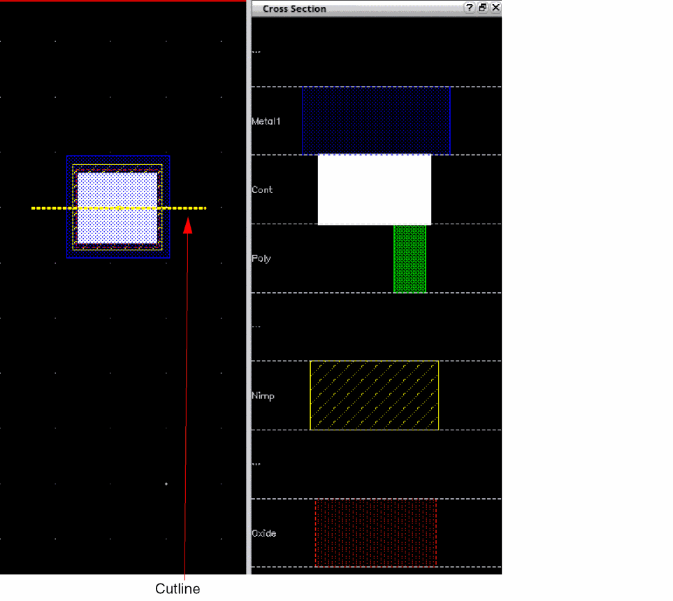

Viewing the Cross Section of a Layout
To view the cross section of a layout in Layout MXL:
-
From the menu bar in your layout, do one of the following to invoke the Cross Section command:
You can also pressControl+Q.
A cutline corresponding to the mouse pointer is displayed on the canvas. -
Move the mouse pointer to the area where you want to view the cross section of the layout.
The cutline follows the pointer and displays the cross section in the assistant or a floating window, depending on the view mode setting. The following image shows the area underneath the yellow cutline displayed in the assistant window. All the layers, from top to bottom, present in the cross section are listed in the assistant.
 -
To freeze the cross section of an area, click on that area on the canvas. Alternatively, select Freeze from the shortcut menu.
The selected cross section continues to be displayed on the canvas and the Cross Section command is exited. -
To unfreeze the cross section, right-click in the floating window or the Cross Section assistant, as applicable, and select Unfreeze from the shortcut menu.
The Cross Section command is active again and the cutline appears on the canvas, which you can move to view the cross section of the desired area.
Toggling Between Cross Section View Modes
You can view the cross section of a layout either in the Cross Section assistant window or in a floating window.
To toggle between the assistant and floating window in Layout MXL:
- Invoke the Cross Section command.
-
Do one of the following to change the view mode:
- Press the spacebar.
- Right-click on the canvas and select Assistant/Floating from the Cross Section shortcut menu.
- Select Options from the Cross Section shortcut menu. This displays the Cross Section Viewer form. Select the Assistant or Floating view mode.
The view mode is toggled.
Related Topics
Specifying Cross Section Viewer Settings
Cross Section Viewer Configuration File
Return to top